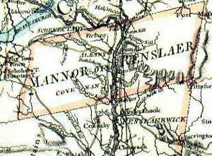
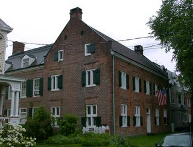
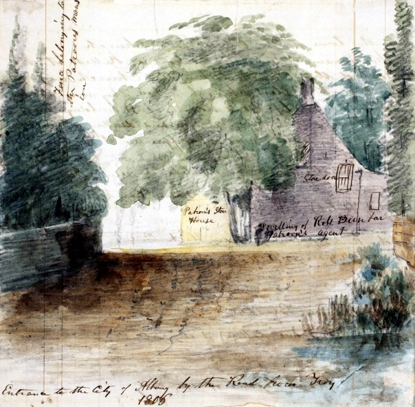

|
by Taking into account numerous spelling and variations of address, the term "Rensselaerswyck" identifies the large tract of land first granted to Killiaen Van Rensselaer in 1629 and "owned" by his descendants for more than the next two hundred years. Although its exact boundaries defied definition, it included all the land that surrounded the city of Albany. In fact, Beverwyck and then Albany encompassed land (a one-by-sixteen mile tract by its charter definition) that had been carved out of the manor - very much against the wishes of the Van Rensselaers. Killiaen Van Rensselaer took step to establish a plantation or "patroonship" in the upper Hudson Valley as an efficient way to cultivate the land and mine the wilderness for farm and forest products that could be exported to Europe and sold. Before his death in 1643, the "first Patroon" engaged hundreds of talented and willing settlers from across Europe and sent them to Rensselaerswyck to be his tenants. These American pioneers were primarily farmers but also were artisans, tradesmen, and others who could support what became the most successful settlement initiative of the New Netherland era. Initially, most of Van Rensselaer's tenants settled within a few miles of Fort Orange. Some of these tenants did practice agriculture and husbandry as specified in the terms of their contracts. But, in general, any effort to make the plantation profitable for the Patroon was compromised by the widespread interest in trading for furs - initially an irresistible avenue to riches for many living in the region. On Killian Van Rensselaer's death in 1643, management of the American estate passed to through two generations of his descendants to Killiaen Van Rensselaer. In 1704 "the Lower Manor" (Greenbush and Claverack) was detached and placed under the direction of Killiaen's brother, Hendrick Van Rensselaer - a one-time Albany city father. This partition made the northern part of the estate (Rensselaerswyck) even more important to the history of the city of Albany. In 1685, royal governor Thomas Dongan had issued a patent for the "Manor of Rensselaerswyck" - establishing the patroonship as a legal entity, describing its borders, and defining the special rights of its proprietor. The patent also specifically excluded ". . . fort Albany and the Towne Albany" from the manor
- setting the stage for Dongan's granting of the Albany city charter in July 1686.  In 1704, the Van Rensselaers partitioned the manor into two parts with the "lower manor" called Claverack going to Albany trader Hendrick Van Rensselaer who built Crailo and, in 1740, passed the estate on to his son. Although a part of Albany County, from 1691 to 1775 Rensselaerswyck sent its own representative to the provincial Assembly. After the War for Independence, that seat was enveloped in Albany County. In March 1779, the new State legislature enacted legislation dividing the Manor into East and West districts. In 1788, Watervliet was made a separate district. In 1793, Bethlehem was made a town within Albany County. The manor on the east side of the Hudson (known as Greenbush) became part of newly created Rensselaer County in 1791. On the death of his father in 1747, Stephen Van Rensselaer II became Patroon at age 5. During his short tenure, he expanded the tenant base and made a number of improvements on the property. On his death in 1769, the estate passed to his son, five-year-old Stephen III, and was administered by kinsman Abraham Ten Broeck until the young Patroon came of age in 1784. By that time, the manor was the most populated entity within Albany County. The population continued to grow as what became Watervliet and then Bethlehem filled up with new tenants and other residents over the next their years. As Stephen Van Rensselaer III became more and more prominent and occupied on different stages, the day-to-day operations of the manor were more administered by the Patroon's agents. The three decade career of Robert Dunbar, Jr., as the Patroon's Agent, is the most notable of these stewardships. Technically, the manor ceased to exist following the death of Stephen Van Rensselaer III in 1839. However, the Van Rensselaer family continued to live at the Manor House, the focal point of manor activity, for many years. Technically, everyone living within the boundaries of the Manor was a Van Rensselaer tenant. However, there seemed to be many exceptions as a number of large farms including Schuyler Flats may have paid no r als. The first tenants were engaged by proprietor Killian Van Rensselaer and sent to America. Those pioneer New Netherland Dutch came from across Europe and have been profiled in The Van Rensselaer Bowier Manuscripts. They constituted a major population source for the city of Albany. The manor grew slowly over the next century as subsequent proprietors attracted new tenants from those already in America. The number of leases increased dramatically after the end of the Seven Years War as Stephen II and his successor, administrator and Van Rensselaer son-in-law Abraham Ten Broeck, became much more active in utilizing the potential of the land. New tenants of the third quarter of the eighteenth century primarily were recently arrived Europeans (many of German background) and some New Englanders. The map drawn by Albany surveyor John R. Bleecker in 1767 locates many of those landholders. After 1784, Stephen III continued to engage tenants with many of the surviving leases dating from his tenure. These tenants included some Europeans and old Albany people. But they were primarily young Yankees who had spread west out of New England! The earliest surviving census of the Manor was made in 1697. A list of freeholders provides eighty-one names of men in the "colony" of Rensselaerwsyck in 1720 and likewise in 1742 . The Watervliet portion of the census of 1790 appears elsewhere on this website. This sketch focuses on Rensselaerswyck but in its Albany context. It is NOT a comprehensive history of the patroonship. One wishes that it could do for the manor what the Colonial Albany Social History Project is doing for the city of Albany. Alas, it cannot! Rensselaerswyck: The Colonial Albany Project has adopted this spelling as the most frequently used and most easily accessible form of the word. For convenience, we consider the landed entity described here to be interchangeable with the place also known as "Van Rensselaer's Manor" or "the Patroonship." Detail of a map made by Claude Joseph Sauthier on order of New York Governor William Tryon. It was engraved and printed in London by William Faden and was dated 1776. Print copy in the Graphics Archive of the Colonial Albany Project. A larger view of this map shows the manor more within the context of greater Albany County. Principal works focused on the history of Rensselaerswyck include: Arnold J. F. Van Laer, Van Rensselaer Bowier Manuscripts: Being the Letters of Killiaen Van Rensselaer, 1630-1643, and Other Documents Relating to the Colony of Rensselaerswyck, translated and edited A. J. F. Van Laer (Albany, 1908), the basic resource for all future study of the manor. It includes profiles of the early settlers of Rensselaerswyck; Samuel G. Nissenson, The Patroon's Domain (New York, 1937), the seminal study; and Oliver A. Rink, Holland on the Hudson: An Economic and Social History of Dutch New York (Ithaca and London, 1986); and Sung Bok Kim, Landlord and Tenant in Colonial New York: Manorial Society, 1664-1775 (Chapel Hill, NC, 1978), an economic study of the four major manors of colonial New York. Also recommended is A Beautiful and Fruitful Place: Selected Rensselaerswijck Seminar Papers, edited by Nancy Anne Mc Clure Zeller and Charles T. Gehring (New Netherland, 1991), a collection of articles - many of which focus on the manor. This paragraph begins to include links to historical resources: New York State Library. The patent fixed Rensselaerswyck's boundaries as: ". . . the banks of Hudsons River . . . beginning att the south end . . . or Berrent Island on Hudsons River and extending northwards up along both sides of the said Hudsons River unto A place heretofore Called the Kahoos or the Great Falls of the said River & extending itselfe east and west all along from each side of the said river backwards into the woods twenty fouer english miles As Also A Certaine tract of land situate lyeing and being on the east side of Hudsons River begining at the Creeke by Major Abraham States and soe Along the said River southward to the south side of Vastrix Island by a creek called Waghankasigh stretching from thence with an easterly line into the woods twenty fouer english miles to a place called Wawanaquaisick And from thence northward to the head of the said Creeke by Major Abrahams States as Aforesaid." The patent is printed in its entirity in Nissenson, Patroon's Domain, 381-85. The original patent dated November 4, 1685 is in the "New York Colonial Manuscripts" series at the New York State Archives. In 1806, the Patroon's agent (manager) would have been Robert Dunbar. Image adapted from a watercolor sketch attributed to Jame Eights (made about 1850) and identified as depicting the "Entrance to the City of Albany by the Troy Road" in 1806. From the holdings of the Albany Institute of History and Art. Greenbush: A descriptive rather than politically precise term referring to that part of Rensselaerswyck across the river from Albany and extending up the hill to the east. Perhaps, it paralleled the present-day towns of East and North Greenbush - but maybe not extending all the way to today's Troy! It covered most of the more substantial country seats of the Van Rensselaer, Douw, and Cuyler families. first posted 3/01; last updated 6/20/17 |
{kind=link}